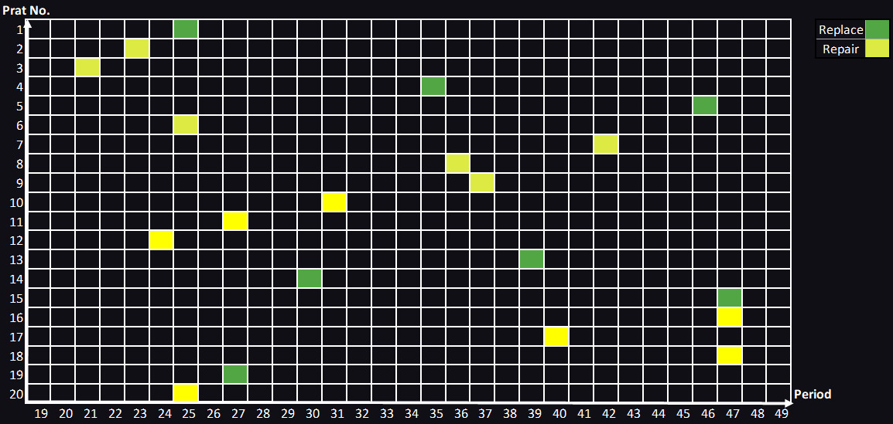

K. N. Toosi University of Technology
Master of Engineering in industrial engineering

K.N. Toosi University of Technology Department of
Industrial Engineering
The Thesis Title:
Predictive Maintenance of Advanced Industrial Machines Using Artificial Intelligence Techniques.
The Supervisor:
Prof. Abdollah Aghaie
A Thesis Presented in Partial Fulfillment of the Requirements for
the Degree of Master of Science in Industrial engineering
February 2020
Abstract
Nowadays, traditional management approaches are not cost-effective, and decisions to optimize and use modern maintenance systems, such as conditional base maintenance, are. Therefore, manufacturing and business environments require the development of intelligent technologies and correct and reliable predictive tools to make decisions on maintenance planning. This study aims to develop a methodology that integrates machine learning with mathematical optimization techniques to schedule maintenance activities. Furthermore, the methodology is based on real-time conditions of assets by considering multi-component machines and positive economic dependencies among them. For this purpose, the K-means clustering algorithm is applied to identify the machines that cause the most breakdowns and interruptions by considering three metrics. Then, selecting the best cluster, the Remaining Useful Life of their components is predicted using long short-term memory and gated recurrent unit neural networks, with the latter giving better results. Finally, maintenance activities were scheduled using a mathematical to minimize maintenance costs.
Keywords: Maintenance, Machine Learning, Neural Network, Scheduling, Clustering, Mathematical Modeling.
List of Software and Programming Languages Used in Thesis
- Python
- General Algebraic Modeling System (GAMS)
- PostgreSQL
- Excel
Methodology
First Phase:
I used a simulated engine degradation dataset, which NASA provided. In the first phase of my thesis, I used a variety of Machin Learning algorithms to analyze datasets and predict the remaining useful life of each engine. Machine learning algorithms are used in this phase:
- Random Forest Feature Importance
- k-means clustering
- LSTM Network
- GRU Network
You can see details of this phase here.
Second Phase:
I used a mathematical model in this phase to schedule maintenance activities, reducing failures and wasting costs. The Mathematical Model that I worked on for the second phase was as follows:
Indices:
- i :Number of each component: i ϵ 1,2,…N (N= total component number)
- j :Index of group number: j ϵ 1,2,…A (A= total machines number)
- t :Number of each period: t ϵ 1,2,…T (T= total period number)
Parameters:
- CPi :Cost of Purchasing component i
- CCi :Cost of Changing component i
- CRi :Cost of Repairing component i
- CGSj :: Cost of Group Startup 𝑗 (operational cost of opening that group of a machine + downtime cost)
- LMi :Last Maintenance period on component i
- Ni :Last Maintenance period on component i
- CDT :The cost of downtime of the equipment per period
- Ni :The number of previous maintenances for component i after its replacement (for the repairable components)
- ETMi :Estimated time to maintenance of component i (based on the failures and replacement program)
- RULi :1, Remaining Useful Life of component i which arises from the machine learning prediction
- CMij :1, 1 if Component i belongs to Machine j; 0 otherwise
- Now :Current date
- CMD :Cost of Machine Downtime in period
- M :Big number
Decision Variables:
- MPCi :Maintenance Period for Component i
- MSCit :Maintenance Scheduling for Component i during period t
- Ri :1 if the component i should be repaired; 0 otherwise
- RNi :1 if component i should be replaced; 0 otherwise
- Hi :1 if component i be scheduled for maintenance before its RUL; 0 otherwise
- Djt :1 if even one component in group j during period t should be scheduled; 0 otherwise
- Kjt :The number of scheduled components for maintenance in group j during period t

* You can see details of GAMS code by click here
Scheduled maintenance
After solving the mathematical model, the period of all 100 components maintenance was scheduled. We can see the scheduled maintenance for 20 prats in the figure below:
Published Articles from Master Thesis:
Prioritizing Equipment Maintenance Scheduling by Clustering Algorithms
November 17-18,2021
Today, traditional management approaches to maintenance activities are not cost-effective, and decisions to optimize and use modern maintenance are of great importance. In addition, equipment breakdowns are always one of the main concerns of managers in the manufacturing industry; because stopping the consequent production line can sometimes impose huge costs., we have attempted to identify equipment that causes the most interruptions and breakdowns in the production line and then, according to three critical indicators in maintenance, make cluster equipment by using one of the most valuable and practical clustering algorithms. Then with the results of applying this clustering, maintenance teams can plan the necessary maintenance of this equipment based on the priority and importance of each cluster. Using the results of clustering and prioritization can be helpful for managers and experts in the maintenance department to make decisions.
Keywords: Maintenance Strategies, Artificial Intelligence, Machine Learning, Data Mining, Clustering, Neural Network.
Association Rule Mining From Failures by Using Apriori Algorithm
May 12,2022
Downtime due to equipment failure is always one of the main concerns of managers in the manufacturing industry; Because equipment failure and the consequent cessation of production can sometimes impose huge costs. This research uses the Apriori algorithm and FP-growth to discover association rules mining from historical failures data and using the Apriori algorithm and the FP-growth algorithm. Initially, the data were cleared, and their structure was transformed to use the algorithms. Then, we focus on comparing between FP-growth and Apriori algorithm. The result represents that FP-growth has a better execution time than Apriori algorithm. In addition, the results of this study can help maintenance teams to predict the symptom of failure and identify the association between future failures. As the advantage of predicting failure parts, a maintenance team will prepare spare parts and be able to reduce equipment downtime .
Keywords: Maintenance, Data mining, Apriori algorithm